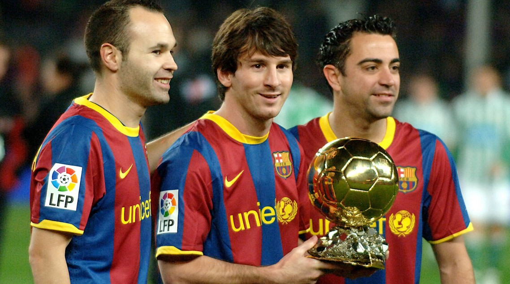

Lionel Messi Awards - Fruits of Tiki-Taka

Tiki-Taka is a style of soccer focused on possession, quick passing, movement off the ball, and controlling the tempo of the game. FC Barcelona became famous for this style during the Pep Guardiola era, with players such as Xavi, Iniesta, and Messi.
I love FC Barcelona's tiki-taka style because it emphasizes teamwork, quick movement, and efficiency. The constant passing and off-ball movement allow players to control the game while creating scoring opportunities. Watching players like Messi, Xavi, and Iniesta showed me how intelligence, teamwork, and efficient decision-making can be just as important as individual talent.

The success of Barcelona's tiki-taka system was driven by three legendary players: Andrés Iniesta, Lionel Messi, and Xavi Hernández. Their intelligence, movement, and technical ability allowed Barcelona to dominate possession and become one of the greatest teams in football history.